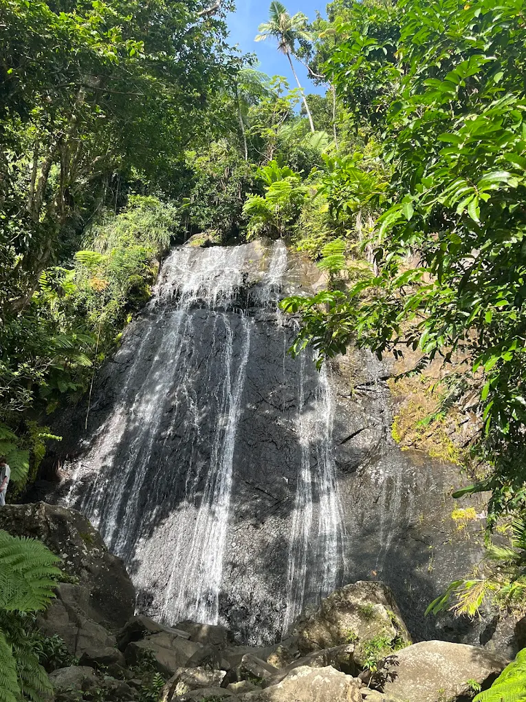
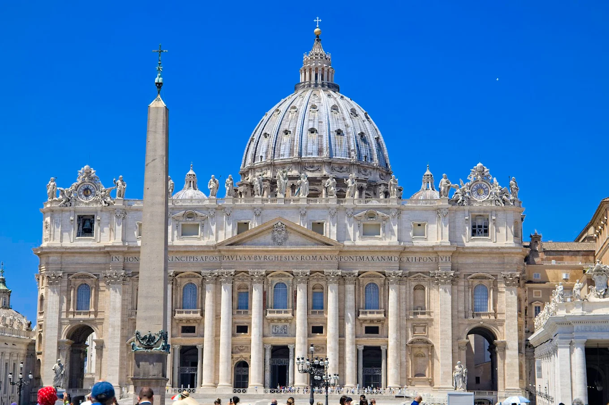
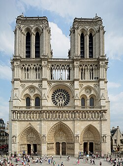
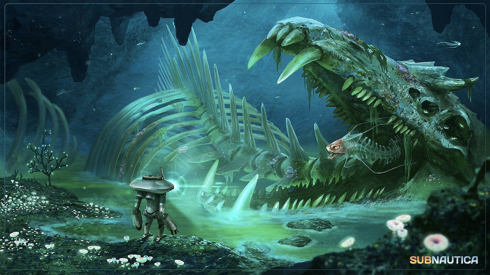
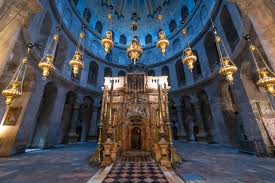

|  |
Puerto Rico, San Sebastian |
La Coca waterfall |
mid december to middle of spring(april) |
$1,000 flight |
I want to go see my Girlfriend and I just want to see what a tropical place is like |
$200-$300 per day |
|  |
Vatican city, Italy |
St. Peters Bassilica |
Any time not in the summer or near christmas |
$1,000 flight |
I’ve been catholic for around a year now and I’ve been wanting to go to just fully take in my faith |
$200 per day |
|  |
Paris, France, |
Notre Dame |
Early mornings or late afternoon any time |
$1,000 flight, |
again because i’m catholic, Notre Dame means “our lady” It is a cathedral built with architectural genius during medieval times, also since everyone who travels goes to paris |
$200-$300 per day |
|  |
Planet 4546b |
Lost River, Bone Fields |
Never |
probably in the billions figure if your not an employee |
Its a video game water world called subnautica that has been with me in my mind ever since i was a child |
1 trillion credits |
|  |
Israel, Jerusalem |
The Holy Sepulchre |
spring or fall |
$1,500-$2000 flight cost |
I’m Catholic and mostly want to go as this is the Holy Land and is rich in history, The Holy Sepulchre as its where jesus was crucified and buried |
$250-$400 per day |